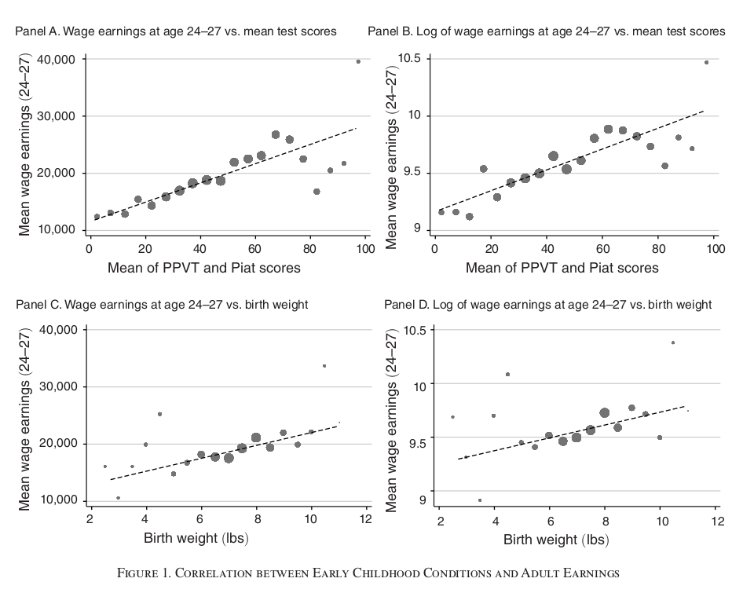
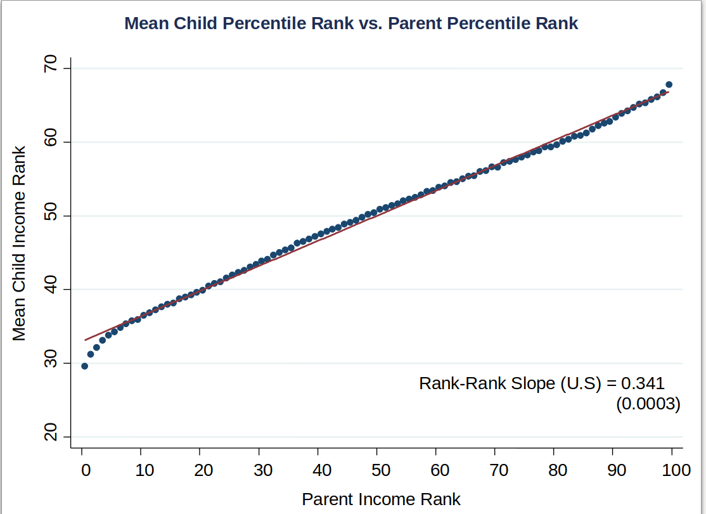
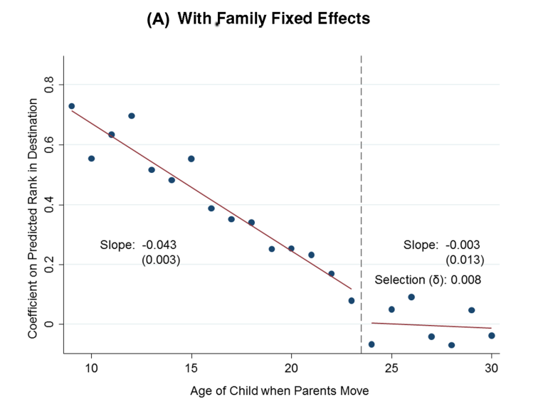
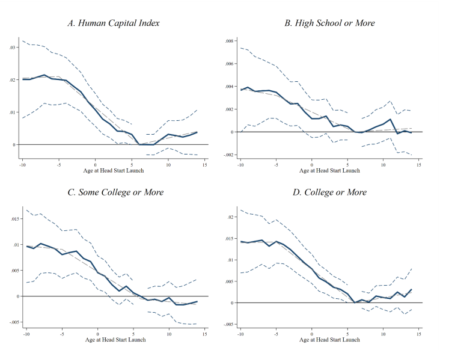
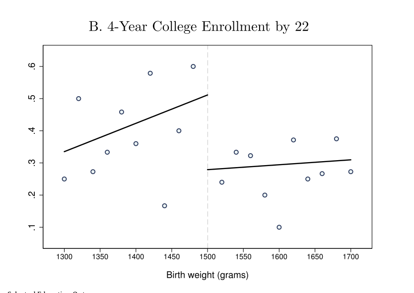

Syllabus and Course Overview
Brief Introduction
About me:
- I’m an Assistant Professor in the econ dept.
- My research is on the development of skills (“human capital”) in early childhood and how it can be shaped by policy
- I also study labor markets and the determinants of income inequality.
- Email: mullinsj@umn.edu (use ECON4621 in subject)
This Course - What is Econometrics?
Economics
- Provides normative and positive theories of social phenomena
- Markets are everywhere
- More broadly: choice behavior under constraints
Econometrics
- Tools for mapping theory \(\rightarrow\) data
- Data/world fundamentally uncertain
- Must make probabilistic statements about theories, parameters
- Model + Data \(\rightarrow\) Policy
Will learn tools rigorously analyse data and map data to policy
R language
Ris a language and environment for statistical computing and graphics- It’s free and open source
- You can do a lot with it
- RStudio: https://www.rstudio.com/products/rstudio/download/
- Introduction: https://cran.r-project.org/doc/manuals/r-release/R-intro.pdf
- I will provide lots of examples to help you learn
Assessment Plan
Three components of assessment (see syllabus on Canvas / Website for dates):
- Writing project (20%)
- A written report that uses data to answer an economic question
- Presentation of results in class
- The analysis will be conducted in groups, reports will be written individually
- Assignments (40%).
- Five total, will count highest four.
- Some theory exercises. Some applications in
R. - Get you used to data and programming. Very important.
- Midterm and Final (20% each). Midterm: February 29 in class.
Submission Guidelines
Keep the following in mind for submitting homework:
- Must be submitted as a
QuartoorRnotebook.- Will see how to write these in recitation
- For theory questions, you can submit additional handwritten answers, but they must be scanned to pdf format
- Your TA has permission to deduct grades for illegible submissions.
How to do well in this class
- To do well, you need a deep understanding of the tools and to be able to think independently with them.
- Come to class, make sure you really understand the exercises we do.
- Will provide exercises to test your understanding.
- Use recitation to help you learn programming in
Rand data work.
Econometrics at work: labor supply example
Issues to work through
Our tools will answer these questions
- How can we estimate the parameters of this model?
- How uncertain are we about the estimates?
- How does this uncertainty change as we get more data?
- Is the estimate sufficiently far from null (i.e. 0)?
- Is the relationship we have found causal?
- Can we extrapolate to a policy effect?
Application - Inequality, Institutions, and Policies
Much work in econ dedicated to answering questions around inequality and social policy:
- What kinds of inequality in outcomes exists?
- Income and wealth
- Health
- Incarceration
- Is there inequality of opportunity?
- Early childhood and family
- Education
- Labor market
- Judicial
- What are causal mechanisms?
- What can policy do? What are unintended consequences?
Diagnosis - What kinds of inequality of opportunity?

- Strong relationship between test scores and later-life outcomes.
- Strong relationship between birth weight and later-life outcomes.
- These proxy for quality of early childhood environment.
Diagnosis - What kinds of inequality of opportunity?

- What does this graph tell us about economic mobility in U.S?
- How could we use this to learn about what determines mobility?
Which relationships are causal?
Questions:
- What are mechanisms of inequality?
- Which observed relationships are causal?
- What policies have an effect?
- When can policy effects be inferred? Need a model.
Inferring Causality: Neighborhoods

- Using within-family variation in exposure to neighborhoods.
- Weaker assumption for causal inference than pure cross-section.
- What do you think?
Inferring Causality: Head Start

- Head Start introduced in some counties before others.
- Use within-county variation in exposure Head Start.
- Evidence: long-run impacts of Head Start.
Difference-in-differences
Inferring Causality: Early Life Health Interventions

- A “jump” in outcomes at 1500g.
- Those just under cut-off receive extra care at birth.
- Under weak assumptions, the size of the jump is a causal effect.
Regression discontinuity
Four Methods of Causal Inference
- Experiments
- e.g. Perry Preschool Intervention, Moving to Opportunity, Audit Studies
- Difference in differences/Event Studies/Other
- e.g. Minimum wage (Card & Krueger 1994), early childhood policies on long-run outcomes.
- Regression Discontinuity
- e.g. Exp. on Infant Health Care (Almond et al 2010), effect of welfare on criminal activity
- Instrumental Variables
- e.g. Returns to schooling, effect of incarceration on labor market outcomes, effect of school expenditure on student outcomes
Key Learning Goals
For each method we must:
- Articulate clear assumptions under which method provides valid inference
- Work from model to sampling theory as data grows
- Use this to test significance of parameter estimates
- And to derive precision of magnitudes
- In order to conduct robust/responsible empirical work, we must master theory
References for Figures
- Janet Currie (2011), Inequality at Birth: Some Causes and Consequences, American Economic Review 101:3
- Chetty, Hendren, Kline & Saez (2014), Where is the Land of Opportunity? The Geography of Intergenerational Mobility in the United States, Quarterly Journal of Economics 129:4